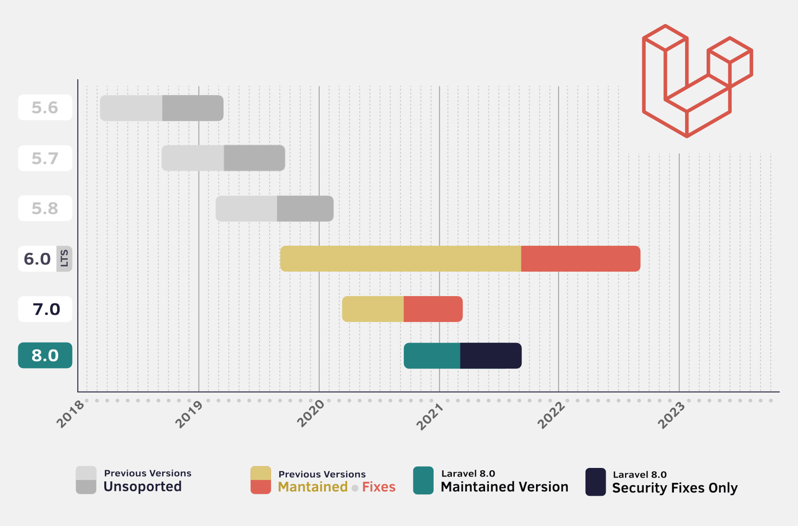

Versiones
Si estás a punto de comenzar un nuevo proyecto, te recomendamos usar la versión 8.
Si tienes la oportunidad de actualizar un proyecto, actualízalo a la versión 8.
Si quieres dar tus Primeros pasos con Laravel puedes comenzar a partir de la versión 5.5 o superior, y luego revisar las pequeñas novedades o cambios entre versiones (Laravel 8 es muy similar a Laravel 7, 6 y 5.*, las actualizaciones entre cada versión toman de 15 minutos a 1 hora, dependiendo de la complejidad de tu aplicación).
| VERSION | LANZAMIENTO | ESTADO |
|---|---|---|
| 10 | 7 Febrero de 2023 | FUT |
| 9 | 8 Febrero de 2022 | ALL |
| 8 | 24 Enero de 2023 | SEC |
¿Por qué Laravel cambia de versión tan rápidamente?
Laravel recibe una actualización mayor cada 6 meses, con varias características nuevas y pocos cambios que afectan la compatibilidad con la versión anterior.
A partir de Laravel 6 el framework está utilizando «versionamiento semántico» o «semver»; es por esto que verás cómo Laravel progresa de la versión 6 a 7, 8, 9, etc. mientras que anteriormente cada 6 meses la versión cambiaba de 5.0 a 5.1, 5.2, 5.3, etc. Esto no quiere decir que los cambios de código entre versiones de Laravel ahora sean más drásticos, o que debas re-aprender el framework desde el principio, más bien todo lo contrario, puesto que el framework es cada vez más estable, los cambios de compatibilidad entre versiones son más pequeños que antes. El cambio de número solo indica que hay cambios que afectan la compatibilidad con la versión anterior, aunque sean mínimos.
